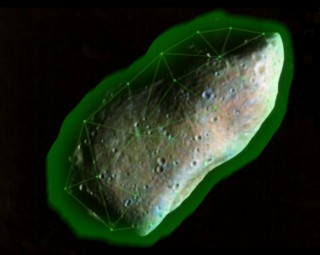

Heading for Earth is an asteroid half the size of the moon. When it hits, all life on Earth will be destroyed.This is no ordinary chunk of planetary debris. This rock has a primitive fusion drive and the most powerful shield we have ever seen.
It is a weapon.
It is the Stroggs last hope of victory.
It is "The Armageddon Device"!
A warship from Earth captured a Strogg shuttle en-route for the asteroid and interrogated the crew. This is what they learned;
The shield is generated and controlled from a reactor on the rock itself. No one Strogg knows the deactivation code. There are three Strogg commanders who know 2 digits each of the six digit code. We do not expect them to volunteer to pass the code to us!
This is your mission soldier.
1) You will be taken to the calculated start position of the asteroid. There is a class m planet there, and we anticipate finding a Strogg colony.
2) Your captain will scan the surface and locate the best spot for a covert insertion.
3) You will lead a small team of 4 and attempt to obtain the deactivation code from the Strogg Commanders. Your battlefield computer has been adapted to read the Strogg cerebral implants and extract the code. This cannot be done while its owner is alive.
4) When you have the code, you must find a way to get onto the asteroid and deactivate the shield.
5) An Earth warship will then destroy the rock with thermonuclear charges.
Good luck soldier!
News,Who are we?,Contact,Download,Screenshots,story